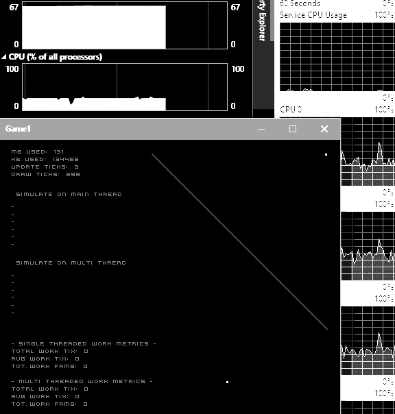

Mutable Multithreading
This is a big topic, with lots to explore, so I created a public repo to do just that.
Here is that public repo: https://github.com/MrGrak/Gameloops
In this repo, I expore writing mutable gameloops in a different multithreaded way.
The 'game' is essentially this: actors move towards a target, and die if they overlap.
The game is over when there are 1 or less actors remaining.
A brief Summary
I model actors as X, Y, and active booleans, using Lists.
Actors move towards a goal position each frame, then check their collisions with other actors.
If two actors collide, the checking actor becomes inactive, and is removed from the game.
There are Pool and Simulation classes that manage the game.
Here is a single threaded version of that game, as a console application.
Multithreading The GameLoop
The way I multithreaded this was to first locate where the most work was being done.
This was the collisions work, as it was checking each actor against every other actor.
For a pool size of 256, this was 256*256 operations, compared to the move operations at 256*1.
So I split the collision work in two, between two threads or main and 1 thread.
This was done by breaking collision functionality between two functions.
Function1 works on 1st half of actors processing collisions.
Function2 works on 2nd half of actors processing collisions.
Here is the latest multi threaded version of that game, in Uwp using Monogame.
A Visual Example
In the gif below, I show the systems working together, and the work ticks for single and multi threaded versions.
The goal position can be changed with left clicks, which causes the actors to change moving direction.
This sim is also interactive, and actors can be added with right clicks.

In order to get extremely accurate work ticks, I use a while(true) loop on a thread.
This 'monitor' object constantly checks a handful of global booleans to see when work starts and completes.
This allows me to verify that the work being done in parallel on threads is actually faster than single threaded version.
This 'monitor' object would only be used while the game was in 'debug' mode, as it eats 25% cpu on it's own.